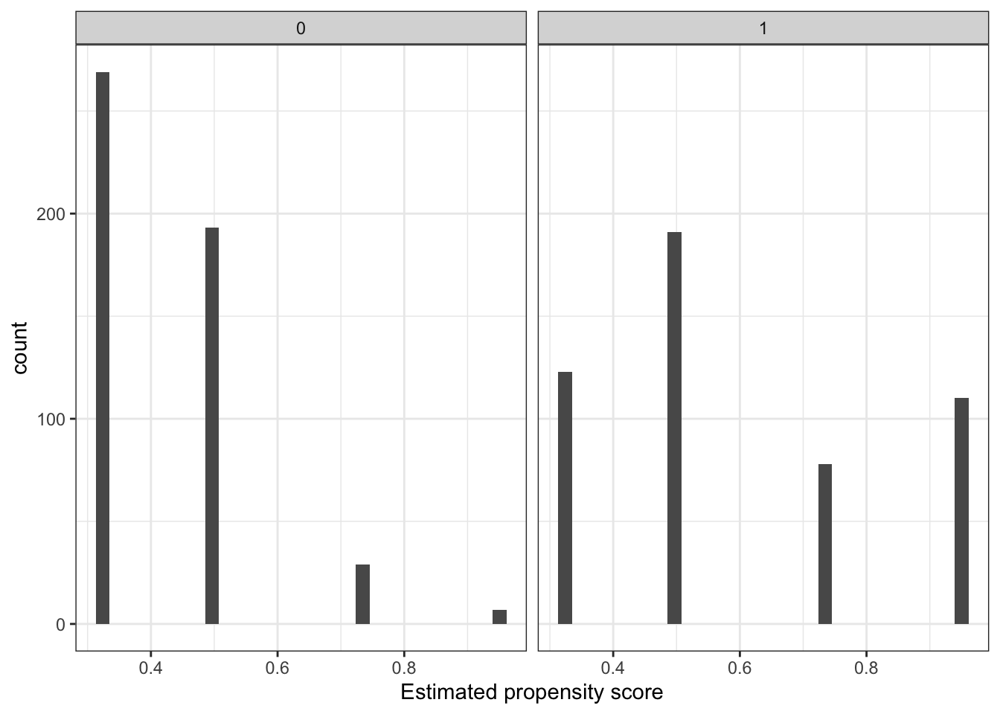
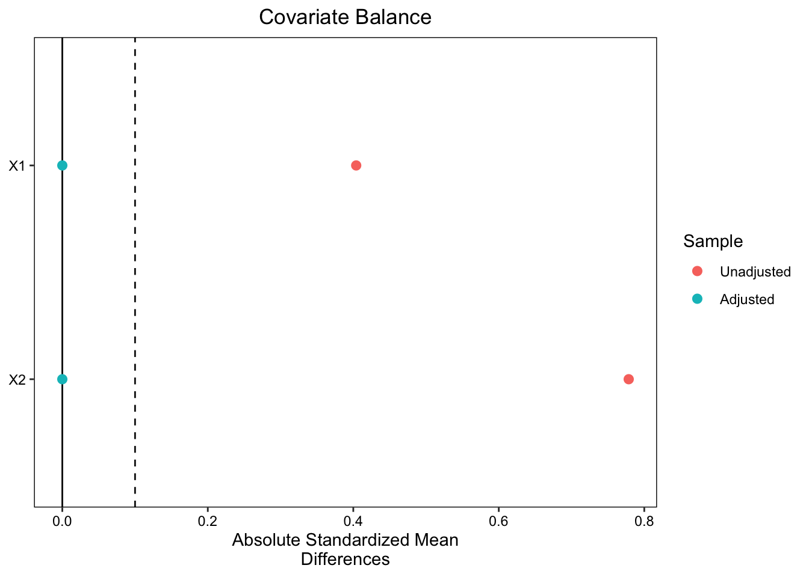
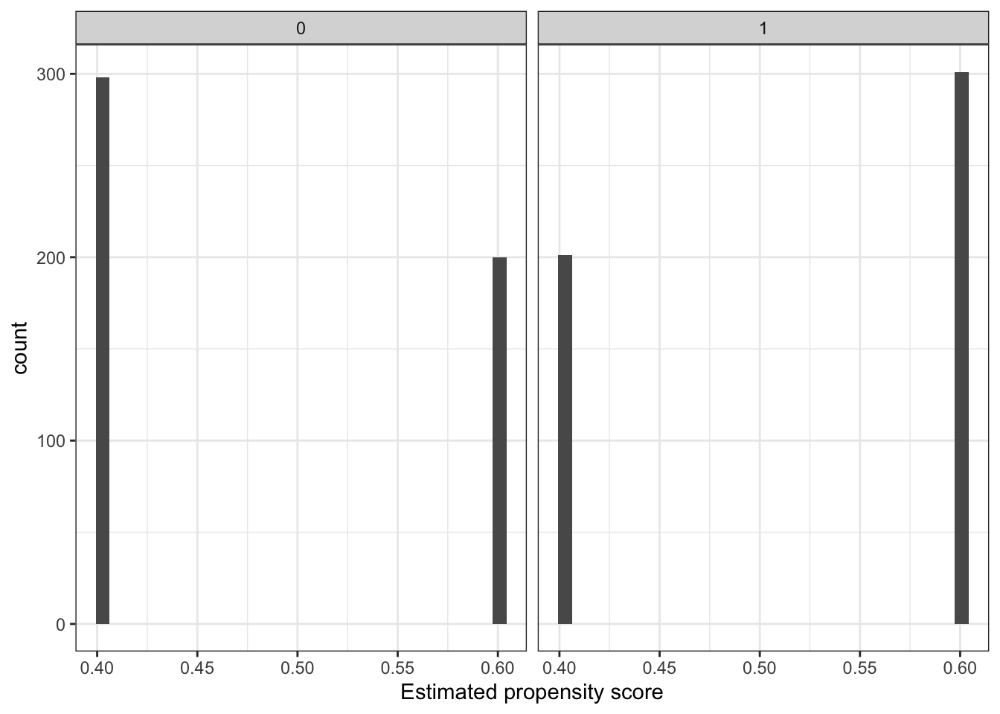
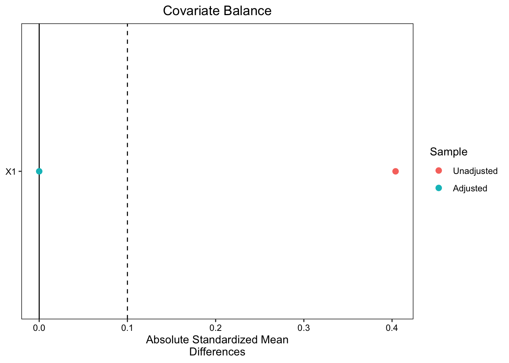

# Simulate data
set.seed(60637)
n <- 1000 # number of subjects
X1 <- rbinom(n, 1, 0.5) # binary covariate
X2 <- rbinom(n, 1, 0.2) # binary covariate
T <- rbinom(n, 1, 0.3 + 0.2 * X1 + 0.45 * X2 ) # treatment assignment with imbalance
# outcomes depend on both treatment and covariates
Y <- rnorm(n, mean = T * 2+0.2*X1+0.8*X2)
data = tibble(Y, T, X1, X2)PLSC 30600 Lab 4
We simulate a dataset with \(n = 1000\) subjects.
Two binary covariates: \(X_1\) and \(X_2\).
A binary treatment variable \(T\) that follows a Bernoulli distribution with probability \(0.3 + 0.2 \times X_1 + 0.45 \times X_2\). This introduces an imbalance in the treatment assignment, as the probability of receiving the treatment depends on the covariates.
an outcome variable \(Y\) is generated for each subject, following a normal distribution with mean \(T \times 2 + 0.2 \times X1 + 0.8 \times X2\). This means the outcome depends on both the treatment and the covariates.
Naive estimate of the treatment effect without adjustment:
estimatr::tidy(lm_robust(Y ~ T, data=data)) term estimate std.error statistic p.value conf.low conf.high df
1 (Intercept) 0.10 0.0449 2.23 2.60e-02 0.012 0.188 998
2 T 2.35 0.0660 35.65 3.74e-180 2.224 2.484 998
outcome
1 Y
2 YWe can see that the CI does not cover the true average treatment effect of 2.
Propensity score estimation
ps_model <- lm_robust(T ~ X1*X2, data = data)
data$ps <- predict(ps_model, newdata = data)
# Let's see the histogram of the propensity scores among treated and control
data %>% ggplot(aes(x=ps)) +
geom_histogram(bins=30) +
facet_wrap(~T) +
xlab("Estimated propensity score") +
theme_bw()
Propensity score weighting
# Apply IPW
data$weights <- ifelse(T == 1, 1/data$ps, 1/(1-data$ps))
# Assess balance
bal_table_unwtd <- bal.tab(T ~ X1 + X2, data = data, binary = "std", s.d.denom="pooled",
)
print(bal_table_unwtd)Balance Measures
Type Diff.Un
X1 Binary 0.404
X2 Binary 0.779
Sample sizes
Control Treated
All 498 502bal_table_wtd <- bal.tab(T ~ X1 + X2, data = data, binary = "std", weights = data$weights,
method = "weighting")Note: `s.d.denom` not specified; assuming pooled.print(bal_table_wtd)Balance Measures
Type Diff.Adj
X1 Binary 0
X2 Binary -0
Effective sample sizes
Control Treated
Unadjusted 498 502
Adjusted 271 436Then, we can see that the balance is improved after weighting.
# A mega useful visualization tool to compare unadjusted vs. adjusted
# is the "love" plot (named after biostatistician Thomas Love)
iptw_love_plot <- love.plot(data %>% select(X1, X2), treat=data$T, s.d.denom="pooled", abs=TRUE,
binary = "std", weights=data$weights, thresholds= c(m=.1))
iptw_love_plot
Next, we estimate the treatment effect using IPW.
# Generate a point estimate
iptw_est <- lm_robust(Y ~ T, data=data, weights=weights)
point_wtd <- coef(iptw_est)[2]
point_wtd T
2.09 How do we get the standard error? We can use the bootstrap.
Bootstrapping
Recall again that bootstrapping is a way of approximating the sampling distribution of an estimator and estimating features of it (such as the variance), by resampling from our sample. With independent observations, the nonparametric bootstrap repeatedly resamples observations with replacement from the sample and computes an estimate for each resample.
set.seed(60637)
nBoot <- 1000 # Number of iterations
ate_boot <- rep(NA, nBoot) # Placeholder to store estimates
# For each iteration
for(boot in 1:nBoot){
# Resample rows with replacement
data_boot <- data[sample(1:nrow(data), nrow(data), replace=TRUE),] #replace = T is key!
# Fit the propensity score model on the bootstrapped data
pscore_model <- lm_robust(T ~ X1*X2,
data=data_boot)
# Get the propensity scores for each observation
data_boot$ps <- predict(pscore_model, newdata = data_boot)
# data_boot$ps <- ifelse(data_boot$ps > 0.999, 0.999, data_boot$ps)
# data_boot$ps <- ifelse(data_boot$ps > 0.001, 0.001, data_boot$ps)
# Calculate the weights
data_boot$wt_boot <- NA
data_boot$wt_boot <- ifelse(T == 1, 1/data_boot$ps, 1/(1-data_boot$ps))
# weighted difference-in-means
boot_reg <- lm_robust(Y ~ T, data=data_boot, weights=data_boot$wt_boot)
# Store the weighted difference-in-means
ate_boot[boot] <- coef(boot_reg)[2]
}
# Take the SD of the ate_boot to get our estimated SE - can do asymptotic inference
sd(ate_boot)[1] 0.107# Asymptotic 95\% CI
c(point_wtd - qnorm(.975)*sd(ate_boot),
point_wtd + qnorm(.975)*sd(ate_boot)) T T
1.88 2.30 When estimating the propensity score, what if we do not observe one of the covariates? Let’s find out.
Suppose we do not observe \(X_2\).
ps_model <- lm_robust(T ~ X1, data = data)
data$ps <- predict(ps_model, newdata = data)
# Let's see the histogram of the propensity scores among treated and control
data %>% ggplot(aes(x=ps)) +
geom_histogram(bins=30) +
facet_wrap(~T) +
xlab("Estimated propensity score") +
theme_bw()
# Apply IPW
data$weights <- ifelse(T == 1, 1/data$ps, 1/(1-data$ps))
# Assess balance
bal_table_unwtd <- bal.tab(T ~ X1, data = data, binary = "std", s.d.denom="pooled",
)
print(bal_table_unwtd)Balance Measures
Type Diff.Un
X1 Binary 0.404
Sample sizes
Control Treated
All 498 502bal_table_wtd <- bal.tab(T ~ X1, data = data, binary = "std", weights = data$weights,
method = "weighting")Note: `s.d.denom` not specified; assuming pooled.print(bal_table_wtd)Balance Measures
Type Diff.Adj
X1 Binary -0
Effective sample sizes
Control Treated
Unadjusted 498 502
Adjusted 478 482# A mega useful visualization tool to compare unadjusted vs. adjusted
# is the "love" plot (named after biostatistician Thomas Love)
iptw_love_plot <- love.plot(data %>% select(X1), treat=data$T, s.d.denom="pooled", abs=TRUE,
binary = "std", weights=data$weights, thresholds= c(m=.1))
iptw_love_plot
We can see that the balance is still ostensibly “perfect” after weighting.
What about the treatment effect estimate?
# Generate a point estimate
iptw_est <- lm_robust(Y ~ T, data=data, weights=weights)
point_wtd <- coef(iptw_est)[2]
point_wtd T
2.33 It seems biased. Let’s see if the bootstraped CI covers the true ATE.
set.seed(60637)
nBoot <- 1000 # Number of iterations
ate_boot <- rep(NA, nBoot) # Placeholder to store estimates
# For each iteration
for(boot in 1:nBoot){
# Resample rows with replacement
data_boot <- data[sample(1:nrow(data), nrow(data), replace=TRUE),] #replace = T is key!
# Fit the propensity score model on the bootstrapped data
pscore_model <- lm_robust(T ~ X1,
data=data_boot)
# Get the propensity scores for each observation
data_boot$ps <- predict(pscore_model, newdata = data_boot)
# data_boot$ps <- ifelse(data_boot$ps > 0.999, 0.999, data_boot$ps)
# data_boot$ps <- ifelse(data_boot$ps > 0.001, 0.001, data_boot$ps)
# Calculate the weights
data_boot$wt_boot <- NA
data_boot$wt_boot <- ifelse(T == 1, 1/data_boot$ps, 1/(1-data_boot$ps))
# weighted difference-in-means
boot_reg <- lm_robust(Y ~ T, data=data_boot, weights=wt_boot)
# Store the weighted difference-in-means
ate_boot[boot] <- coef(boot_reg)[2]
}
# Take the SD of the ate_boot to get our estimated SE - can do asymptotic inference
sd(ate_boot)[1] 0.0686# Asymptotic 95\% CI
c(point_wtd - qnorm(.975)*sd(ate_boot),
point_wtd + qnorm(.975)*sd(ate_boot)) T T
2.20 2.47 It doesn’t.